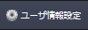
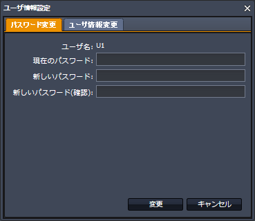
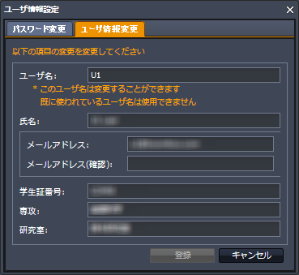

SecretFilesマニュアル
3. SecretFilesサービス(解説編)
3.3 ポップアップウィンドウ
3.3.1 ユーザ情報設定
パスワードの変更、利用者情報の変更を行なうときは、トップバーの「ユーザ情報設定」ボタンをクリックします。

パスワード変更
パスワードを変更するときは、この画面から作業します。

まず、ログインに使用した現在のパスワードを入力し、続けて新しいパスワードを2回入力します。
利用者情報変更
このウィンドウを初めて表示したときは、初めてのログイン時に行なったアクティベーション(ご利用開始時初期設定)の内容が表示されます。
既にこのウィンドウにて操作を行なった場合には、最終の状態を表示します。

ここでは、次の各項目を変更することができます。
a) ユーザ名
ログイン時やサービス利用中に使用する名前です。他の利用者と同じものを登録することはできません。
「ご利用開始時初期設定」画面が開いた時には、ログイン時に使用した仮のユーザ名が表示されていますので、変更して下さい。
もし既に別の利用者が登録しているユーザ名を入力した場合には、アラート(エラーメッセージ)が表示されますので、再入力して下さい。
* 日本語の入力も受け付けますが、英数字を利用することをおすすめします。
b) 氏名
本名を漢字で入力して下さい。(姓名の間にスペースなどを入れる必要はありません。)
* 本名にひらがなやカタカナを使用している場合には、そのまま入力して下さい。
* 氏名は全角で入力して下さい。
* 外国籍の方などで本名がアファベット表記の方は半角で入力して下さい。スペースが必要な場合にはスペースを入力して下さい。
c) メールアドレス
サービスの中で利用者に通知が必要な際に使用しますので、実際に使用しているメールアドレスを入力して下さい。
* 誤入力を避けるため、同じメールアドレスを2回入力して下さい。この際、1回目に入力したものをコピーして貼り付けることは避けて下さい。1回目の入力が間違っていた場合には、そのまま間違って登録されてしまいます。
d) 学生証番号
学生証番号を正しく半角で入力して下さい。
e) 専攻
専攻を正しく全角で入力して下さい。省略した名称は使用しないで下さい。
f) 研究室
研究室を正しく全角で入力して下さい。省略した名称は使用しないで下さい。
属している研究室がない場合には「該当なし」と入力して下さい。
複数の研究室に属している場合には、間を「、」で区切って入力して下さい。